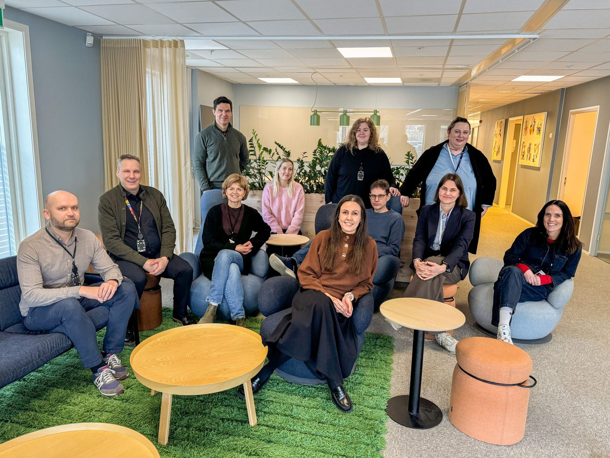
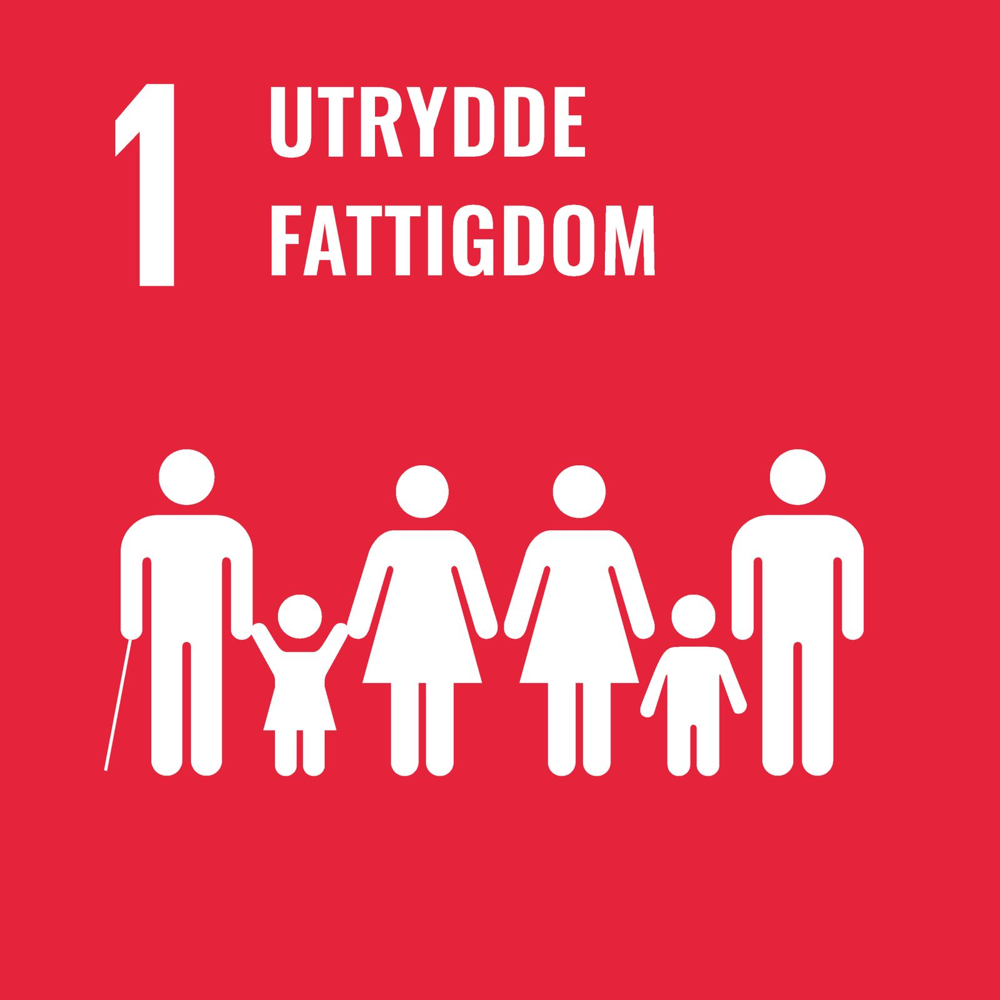
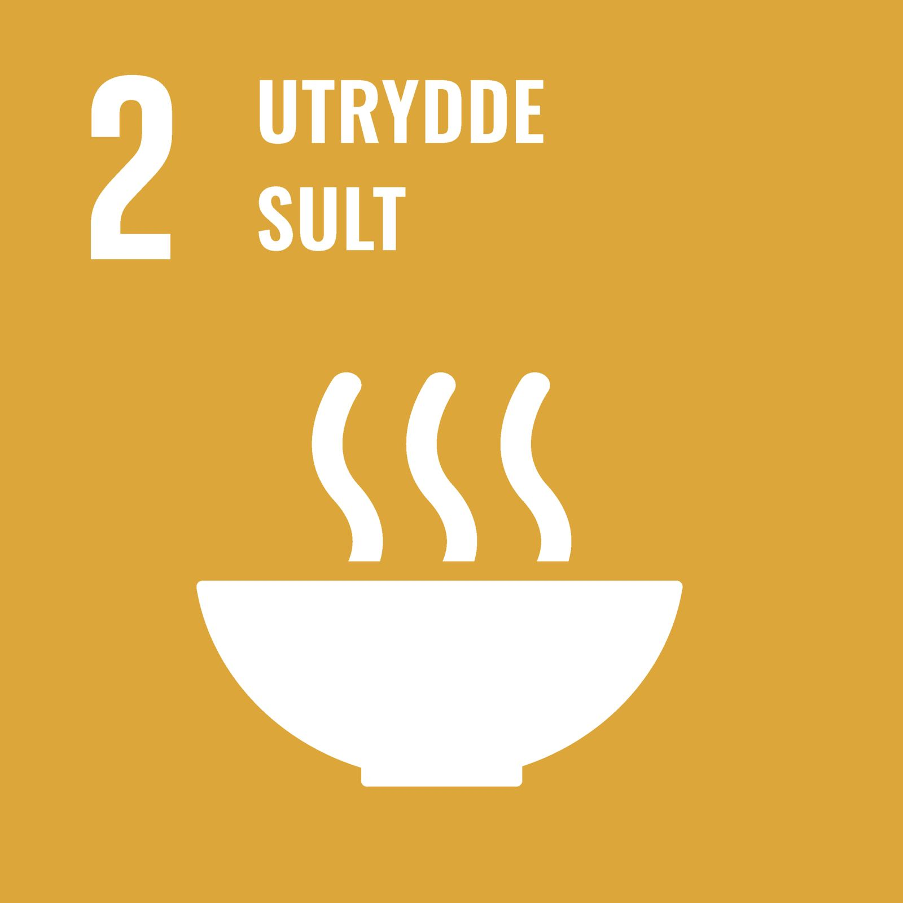

Bærekraft
Bærekraft
Hos blinQ er vi eksperter på moderne teknologi. Vår spisskompetanse strekker seg fra tradisjonell legacy IT gjennom moderne skytjenester og helt ut til din arbeidsflate.
Digital transformasjon, automatisering, sikkerhet, nettverk, innsikt, data, samhandling og kunstig intelligens (AI) er noen av områdene våre konsulenter har spesialisert seg innen. Fra våre kontorer i Oslo, Bergen og Trondheim har vi kunnskapen og erfaringen for å levere innovative og effektive løsninger uansett hvor utfordringen måtte finne sted.
Ansatte i din virksomhet bruker allerede AI. Spørsmålet er ikke om – men hvordan. blinQ hjelper dere ta kontroll, redusere risiko og faktisk hente ut verdien av AI.
Få oversikt over hva som faktisk skjer – og sett rammer som gir trygghet uten å stoppe utviklingen.



Kort fortalt: hva trenger du?
Beskriv saken, så svarer vi med hva det krever og hva det koster.